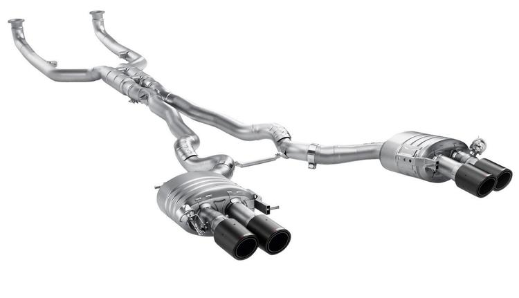
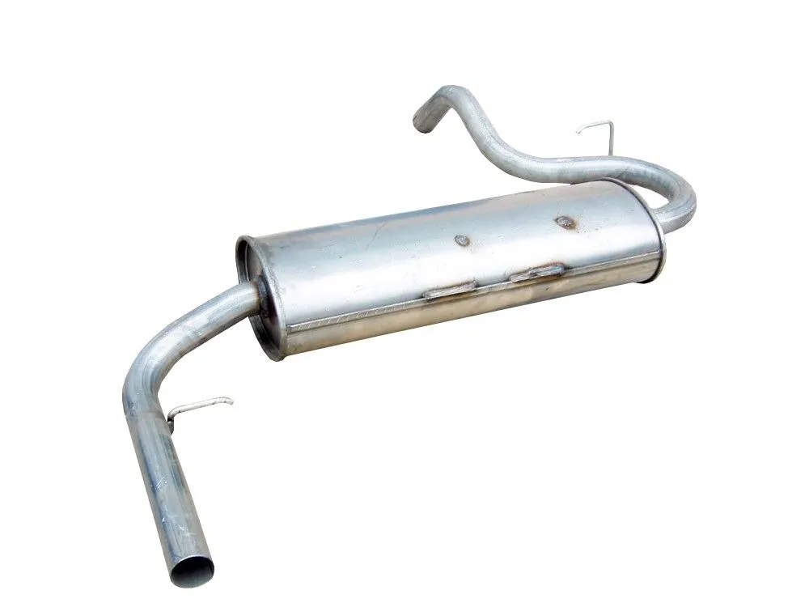
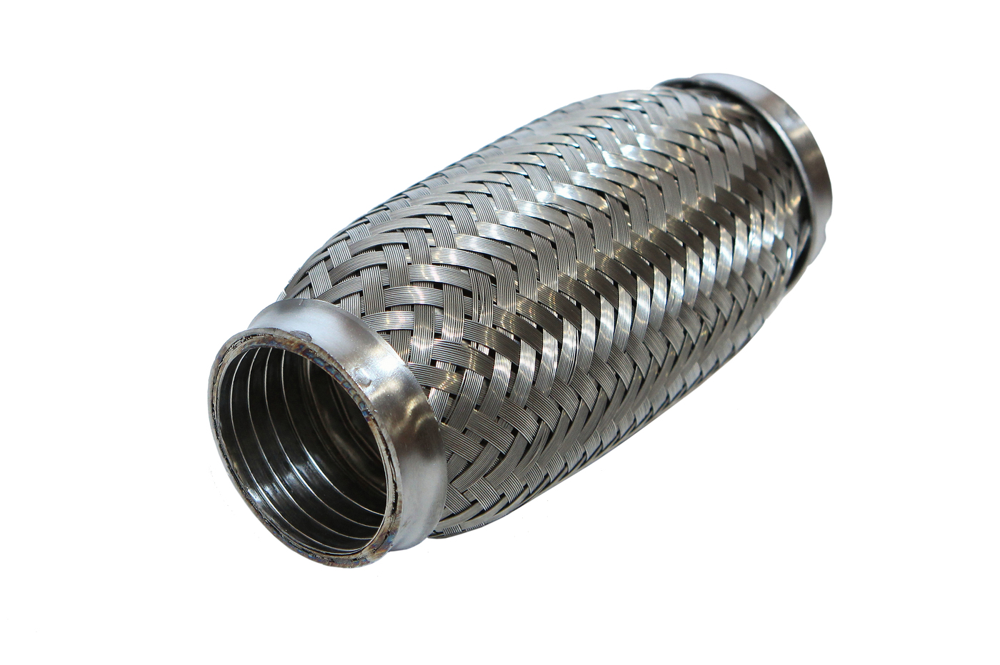

сервис
Бесплатно удалить катализаторы за 1,5 часа
Записаться на бесплатное удаление катализаторов

Полная диагностика и ремонт выхлопной системы

Замена глушителя и резонатора
Перевод автомобиля
под Евро 2

Замена
гофры глушителя